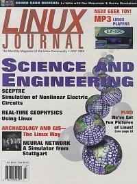

Shutdown Archive web server
Search:
Linux Journal
Issue #63/July 1999

Focus
Science and Engineering
by Marjorie L. Richardson
Features
Stuttgart Neural Network Simulator
by Ed Petron
Exploring connectionism and machine learning with SNNS.
Archaeology and GIS—The Linux Way
by R. Joe Brandon, Trevor Kludt and Markus Neteler
A description of an archaeology project making use of the freely available geographic information system GRASS.
Real-Time Geophysics Using Linux
by Laura Connor and Charles B. Connor
How the geophysical industry is using Linux for processing of magnetometer data.
SCEPTRE: Simulation of Nonlinear Electric Circuits
by Wolf-Rainer Novender
A look at an automatic circuit analysis program through engineering-based examples.
Reviews
VMware Virtual Platform
by Brian Walters
Open Sources: Voices from the Open Source Revolution
by Doc Searls
The Complete Idiot's Guide to Linux
by Marjorie Richardson
Forum
A Geek in Paradise
by Jon “maddog” Hall
A trip to see the particle accelerator at Fermilabs by a self-professed geek.
MP3 Linux Players
by Craig Knudsen
Is MP3 the wave of the future? Mr. Knudsen describes this new technology and what it will mean to the listener.
Linux on IBM Thinkpad 750Cs
by Daniel Graves
CORBA Program Development, Part 3
by J. Mark Shacklette and Jeff Illian
A look at CORBA implementations in Java to provide interoperability between platforms.
Dev Mazumdar and Hannu Savolainen Interview
by David Phillips
Mr. Phillips gets the low down on 4Front technologies and what's happening in the world of sound.
Building a Linux Certification Program
by Dan York
A report on a community-based initiative to develop a professional certification program for Linux.
Columns
Focus on Software
by David A. Bandel
Linux Means Business
Linux and E-Commerce
by Yermo Lamers
Linux and E-Commerce The experience of one company selling Windows software using Linux to build a reliable e-commerce solution.
At the Forge
Personalizing “New” Labels
by Reuven M. Lerner
Personalizing “New” Labels How to let the site visitor know which documents he hasn't seen.
Guest Editorial
The Point Really is Free Beer
by Eric Hughes
The Point Really is Free Beer The average Joe wants something for nothing, and Mr. Hughes wants to give it to him.
Departments
Letters
by Marjorie L. Richardson
More Letters to the Editor
Report from the Trade Show Floor
by Matthew Cunningham
New Products
Best of Technical Support
The Linux Position
by Doc Searls
Strictly On-Line
Parallel Algorithms for Calculating Underground Water Qualit
by Tran Van Lang
The PVM system helps us in designing parallel processing programs for multi-computer systems. The implementation of the parallel algorithm enables the solving of large mechanic problems requiring large amounts of computer time and memory.
MuPad
by Alasdair McAndrew
Introduction to Sybase, Part 2
by Jay Sissom
This month Mr. Sissom shows us how to set up and use a Sybase client written in Perl through examples.
Precision Farming and Linux: An Expose
by Gordon Haverland
Farming is not a place one would expect to fine Linux, but there it is. Mr. Haverland tells us how Linux is used in this unusual area.
UNIX awk & sed Programmer's Interactive Workbook
by Paul Dunne
The UNIX CD Bookshelf
by Derek Vadala
Archive Index
Shutdown Archive web server
Search:
Copyright © 1994 - 2018
Linux Journal
. All rights reserved.